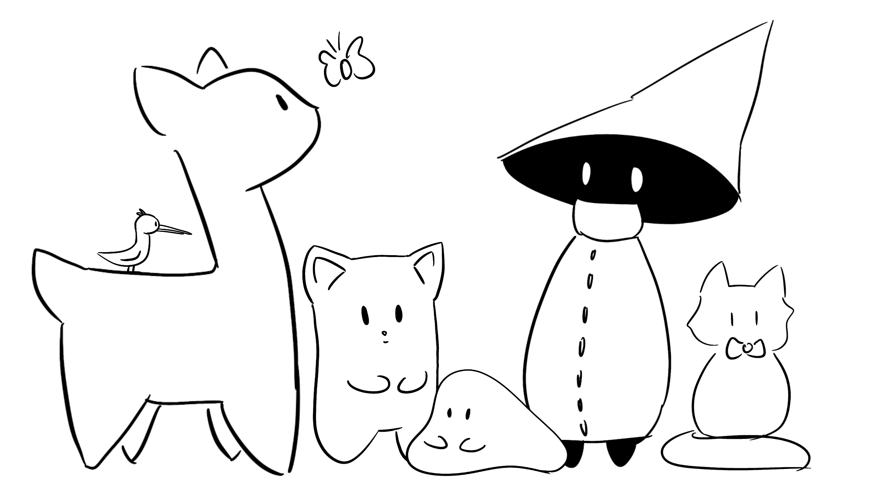

 Hey! This is the page on my original species, the Mysterious Men! The Mysterious Men are a species of magical creature who live wherever there is great happiness. Although they're called the Mysterious "Men" they're actually nongendered and reproduce asexually! I created them in 2020 during the pandemic when I was sitting at home, bored to death from online classes in my bedroom. I wanted to draw a simple little thing that wouldn't take too much effort. Since I deem hands, feet, faces, and generally body proportions to be effortful, the Mysterious Man was born looking like a bowling pin with a hat. I originally called it the Mysterious Dude, but then I made more of them and decided to call them Mysterious Men because I like alliteration. Then I gave them friends, the Moop and the Corfael! The other creatures (under the "Others" tab) are not really friends but they all exist in the same universe and are friendly with each other. Anyways, I hope you enjoy exploring their lore and learning all about the little guys. Thanks for checking us out!
Here are the very first Mysterious Men, Moop, and Corfael!